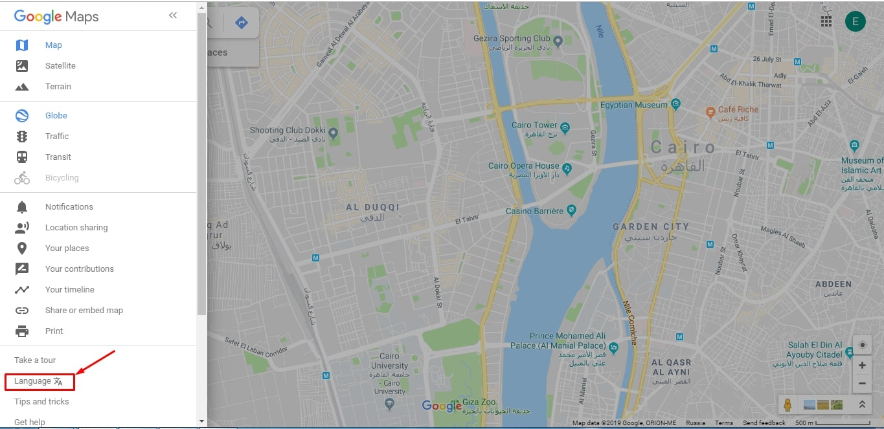
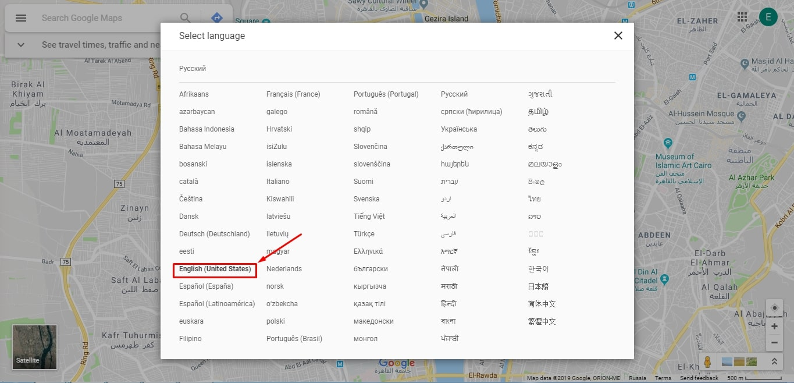
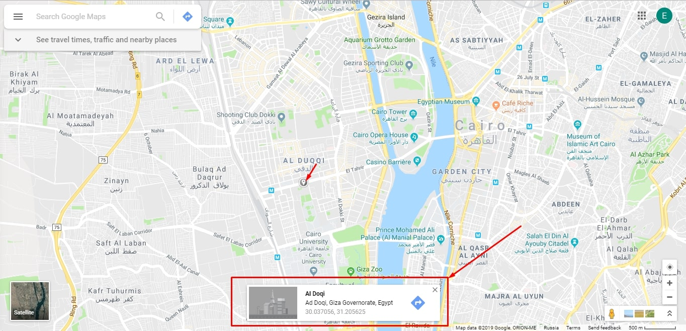
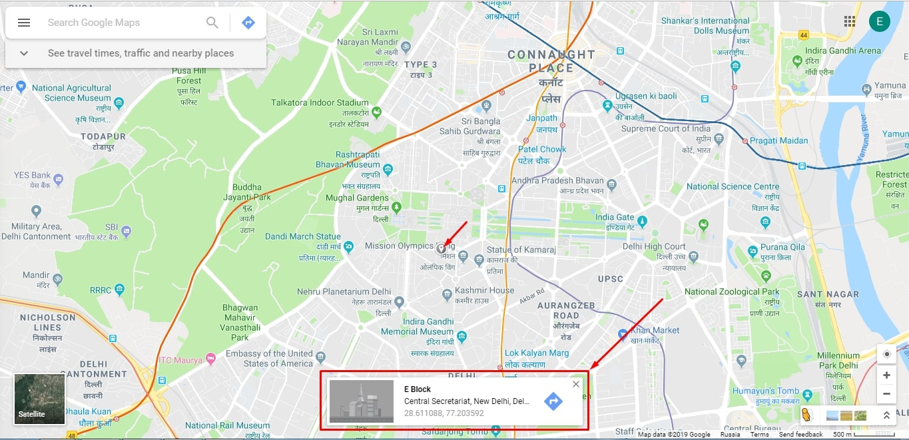

Une carte verte, émise par les services américains de citoyenneté et d’immigration (USCIS), vous permet de vivre et de travailler aux États-Unis de façon permanente. Il existe de nombreuses façons d’obtenir la carte verte, y compris par le biais de la famille, de l’emploi ou du statut de réfugié ou d’asile, mais tout le monde n’est admissible, et l’un d’eux est le programme Diversity Immigrant Visa (DV) (communément appelé loterie à la carte verte).
Chaque année, le programme DV délivre environ 50000 visas d'immigrants, basés sur les résultats d'un tirage au sort. Les visas sont répartis entre les pays ayant des taux d’immigration historiquement bas aux États-Unis.
La période d’inscription en ligne au programme DV s’étend généralement
du 1er octobre au 3 novembre de chaque année. La période d’inscription à
la loterie des cartes vertes DV-2021 commencera probablement le 2
octobre 2019. Le Département d’État des États-Unis n’a pas encore publié
les informations d’enregistrement concernant la loterie de cette
année.
Vous devez vous inscrire le plus tôt possible après
son ouverture, car le nombre de visas par pays est limité.
Les demandes seront acceptées en octobre-novembre 2020, mais les résultats de la loterie seront publiés en mai 2021 et le traitement et la délivrance des visas ne se feront qu'en 2022.
Oui. Bien que la pandémie de Covid-19 affecte tout, la loterie se tiendra toujours en 2020. Voir plus d'informations sur .
Le Département d’État des États-Unis n’a toujours pas fourni d’informations, mais la loi limite à 55 000 le nombre de visas de diversité (DV) disponibles chaque année. En règle générale, environ 110 000 personnes seront sélectionnées au début en tant que gagnants de la loterie, puis environ la moitié d'entre elles n'obtiendront pas le visa pour une raison quelconque et, à terme, environ 55 000 visas seront délivrés.
Le nombre de visas délivrés aux habitants de chaque pays dépend des limites régionales établies, du nombre de participants de chaque pays et du nombre de participants sélectionnés éligibles au visa. Pas plus de 7% du total des visas disponibles ne peuvent être accordés à des ressortissants d’un pays donné.
Les candidatures ne sont acceptées que sur le site web officiel du département d'État américain: https://www.dvlottery.state.gov. Les autres services sont des intermédiaires qui remplissent le formulaire pour vous, et l'USCIS décourage l'utilisation de leurs services.
Les chances de gagner une carte verte à la loterie DV sont bien plus grandes que de gagner un million à une loterie habituelle.
Rappelez-vous d’abord: ne mentez pas, écrivez seulement la vérité.
Utilisez uniquement des lettres anglaises.
Pays
d’éligibilité.
Faites attention au pays d'éligibilité: vous
devez sélectionner exactement le pays de naissance, pas le pays de
résidence.
Faites la bonne photo.
Beaucoup de
participants ne parviennent pas à fournir une photo correcte. USCIS
disqualifie automatiquement les applications dont les photos ne
répondent pas aux exigences. Il existe de nombreuses exigences et
conditions allant de l’arrière-plan à la taille de la tête. Vous pouvez
donc utiliser des services spéciaux tels que
https://fr.visafoto.com/diversity-visa-lottery-photo
Chaque membre adulte de votre famille (conjoint, enfants adultes, parents) doit participer à la loterie en tant que principal participant (en fournissant tous les autres membres de la famille tels que le conjoint ou les enfants).
Il n'y a pas d'âge minimum pour postuler, mais en raison de l'exigence d'études secondaires, la plupart des personnes de moins de 18 ans seront effectivement exclues.
Pour être éligibles, les participants ne doivent pas avoir de compétences linguistiques particulières.
Oui, un participant peut postuler à ce programme partout dans le monde, y compris aux États-Unis.
Oui, vous pouvez participer à la loterie DV si vous avez déjà un type de visa.
Oui.
Non, vous devriez le faire vous-même.
Non, vous ne pouvez inclure que votre conjoint légal dans votre demande en tant que produit dérivé.
Il n'y a pas de frais d'inscription, mais si vous avez été sélectionné,
vous devrez payer environ 215 $ pour un examen médical et 330 $ pour
l'entretien par personne.
De plus, vous paierez les frais de
visa pour les demandes d'immigration en personne uniquement à
l'ambassade ou au consulat des États-Unis au moment de la demande de
visa. N'envoyez pas d'argent pour les frais DV à qui que ce soit par la
poste, Western Union ou tout autre service de transfert d'argent.
Les frais de demande de visa ne peuvent pas être remboursés. Si un agent consulaire détermine que vous ne remplissez pas les conditions requises pour le visa, ou si vous êtes autrement inadmissible au DV en vertu du droit américain, il ne peut pas délivrer de visa et vous perdrez tous les frais payés.
Il n'y a que deux critères à respecter. Premier pays: votre pays de naissance (ou pays du conjoint ou du parent) doit figurer sur la liste des pays éligibles. Deuxièmement, vous devez avoir au moins une formation de niveau secondaire ou une expérience de travail de deux ans au cours des cinq dernières années dans une profession qui nécessite au moins deux années de formation ou d'expérience.
Vous devez indiquer votre conjoint actuel (épouse ou mari) même si vous êtes actuellement séparé de lui / elle et de tous les enfants non mariés de moins de 21 ans.
Un seul par an, mais les conjoints peuvent soumettre des entrées séparées.
Vous pouvez essayer de gagner chaque année, mais seulement une candidature par an.
Oui, vous pouvez également obtenir la photo correcte à l'adresse https://fr.visafoto.com/diversity-visa-lottery-photo
Vous avez 30 minutes pour remplir le formulaire. Si vous dépassez la limite de 30 minutes et n’avez pas soumis votre candidature, le système efface toutes les informations déjà entrées. La meilleure chose à faire est donc que vous vous entraîniez en ligne avant la loterie et que toutes vos données de formulaire soient prêtes avant que vous ne commenciez vraiment à remplir le formulaire sur le site officiel.
Non, vous pouvez remplir le formulaire en ligne uniquement. Mais vous pouvez utiliser la copie exacte du formulaire d'inscription le ds-5501 à cette fin.
Oui, vous pouvez soumettre à nouveau votre inscription avant la fin de la loterie. Vous pouvez essayer de soumettre une demande autant de fois que nécessaire jusqu'à ce qu'une demande complète soit reçue et que l'avis de confirmation soit envoyé. Une fois que vous avez reçu un avis de confirmation, votre inscription est terminée et vous ne devez plus envoyer d’entrées supplémentaires.
Vous devriez recevoir l'avis de confirmation immédiatement, avec un code de confirmation, mais des retards peuvent parfois se produire. Vous pouvez appuyer sur le bouton «Soumettre» autant de fois que nécessaire jusqu'à ce qu'une demande complète soit envoyée et que vous receviez la confirmation.
Si vous n'avez pas reçu de numéro de confirmation, votre entrée n'a pas été enregistrée. Vous devez soumettre une autre entrée. Il ne sera pas compté comme un doublon.
Grâce au programme de loterie DV, seuls le conjoint et les enfants peuvent vous accompagner. Pour les autres membres de la famille, vous pouvez demander un visa de réunion de famille ultérieurement. Mais cela prendra beaucoup de temps.
Il n'y a pas de restriction pour les personnes condamnées, mais rappelez-vous que la décision de délivrer un visa dépend du consulat des États-Unis.
Non ce n'est pas. Tout le monde peut participer à la loterie et les gagnants sont sélectionnés au hasard par le département d'État américain.
Pour participer à la loterie DV, vous n'avez pas besoin d'un travail ou d'une offre d'emploi aux États-Unis, vous n'avez pas besoin de parents aux États-Unis, vous n'avez pas besoin d'un montant d'argent spécifique.
N'attendez pas que le département d'État américain vous contacte par courrier électronique ou par téléphone pour vous informer de votre sélection. Vérifiez votre résultat par vous-même via la vérification du statut du participant sur le site Web E-DV http://dvlottery.state.gov/ en utilisant votre numéro de confirmation. C'est le seul moyen de le savoir. Les informations seront publiées vers mai 2020.
Le gouvernement des États-Unis n’envoie jamais de courriels pour informer les personnes qu’elles ont été sélectionnées et il n’est pas prévu d’utiliser des courriels à cette fin pour le programme DV-2021. Le département d'État ne vous demandera jamais d'envoyer de l'argent par courrier ou par des services tels que Western Union.
Vous pouvez savoir si vous êtes un gagnant à la loterie en mai 2020 en visitant la page de vérification du statut de participant DV en ligne à l'adresse http://dvlottery.state.gov. Les informations seront disponibles jusqu'à la fin du mois de septembre 2021.
Un outil est maintenant disponible sur la page Vérification du statut du
participant du site Web E-DV, qui vous permettra de récupérer votre
numéro de confirmation via l'adresse e-mail avec laquelle vous vous êtes
inscrit en entrant certaines informations personnelles pour confirmer
votre identité.
Il n'y a pas d'autre moyen de vérifier votre
statut ou de fournir votre numéro de confirmation. Les ambassades et
consulats des États-Unis et le centre consulaire du Kentucky ne peuvent
pas le faire. Le département d'État n'est pas en mesure de fournir une
liste des personnes sélectionnées pour poursuivre le processus de
demande de visa.
Les gagnants seront choisis au hasard par le département d’État américain.
Gagner à la loterie de cartes vertes ne vous donnera pas automatiquement
une carte verte. Si vous avez la chance de gagner, tout ce que cela
signifie, c’est que vous avez gagné l’occasion de faire une demande de
carte verte. Vous devez donc vérifier votre numéro de confirmation sur
le site Web officiel du programme DV
http://dvlottery.state.gov/. Si vous avez gagné, vous
serez redirigé vers une page de confirmation
contenant des instructions supplémentaires.
Faites attention
lorsque vous remplissez le formulaire de loterie, car si vous êtes
sélectionné, vous devrez remplir le formulaire de visa d'immigrant
DS-260 avec exactement les mêmes informations que le formulaire de
loterie. C’est pourquoi nous vous recommandons de ne pas utiliser les
services de personnes qui complètent le formulaire de loterie.
N'utilisez aucun intermédiaire ou service tiers pour remplir la demande
de loterie DV pour vous. C’est mieux d’appliquer seul. Nous vous
recommandons d'utiliser
https://fr.visafoto.com/diversity-visa-lottery-photo
pour remplir, puis enregistrer et imprimer votre formulaire de loterie
DV avant de remplir le formulaire afin de vous rappeler toutes vos
données de soumission. utilisez les mêmes données sur le formulaire de
visa d'immigrant DS-260.
En cas de victoire dans le programme DV-2021, vous n'êtes autorisé à
demander un visa que pendant l'exercice financier du gouvernement
américain 2021, soit du 1er octobre 2020 au 30 septembre 2021. Il est
recommandé de le faire dès possible.
Si votre entretien avec
un consulat est réussi, vous obtiendrez un visa pour 6 mois. Si vous ne
déménagez pas aux États-Unis pendant cette période, votre visa sera
annulé et il sera impossible de le récupérer.
Au début, vous recevrez un visa d'immigration et vous pourrez obtenir la carte verte après avoir déménagé aux États-Unis.
Non, la décision de l'immigration est à vous.
Oui, vous pouvez. Cependant, vos intentions d'immigration peuvent être mises en doute et la décision de délivrer un visa dépend du consulat des États-Unis. Dans ce cas, les chances d'obtenir un visa ne sont pas élevées.
Il est fortement recommandé de posséder un passeport valide délivré par votre pays avant de participer à la loterie DV. Donc, si vous n'avez pas de passeport valide, vous devriez en obtenir un avant de remplir le formulaire de loterie.
Vous devez écrire votre nom en lettres anglaises exactement comme dans
votre passeport.
Soyez prudent avec le deuxième prénom. Si
votre nom de famille est double (il comporte 2 parties), vous devez
répertorier toutes les parties dans le champ «Nom / Nom de famille». Si
vous en mettez une partie en tant que deuxième prénom, vous serez
disqualifié.
Si vous n’avez pas de prénom ou de prénom, vous
pouvez l’omettre en cochant la case «Pas de nom».
Si en votre
nom vous avez des lettres avec “crotchets”, changez-les simplement en
lettres anglaises similaires. Par exemple, “ä” peut être changé en
anglais “a”, “ö” en “o”, “ñ” en “n”, etc.
Vous devriez écrire votre nom exactement comme sur votre passeport en lettres anglaises. L'orthographe de votre nom sur la carte d'identité, le certificat de naissance et d'autres documents n'a pas d'importance. Ceci est indiqué dans les instructions fournies par le département d'État américain: https://travel.state.gov/content/dam/visas/Diversity-Visa/DV-Instructions-Translations/DV-2018-Instructions-Translations/DV-2018%20Instructions%20English.pdf
Il y a des images d'homme et de femme pour une aide supplémentaire près des boutons radio.
Faites attention à l'ordre des éléments. C'est l'ordre des dates américain, donc vous devez d'abord mettre le mois (pas le jour), puis le jour et le dernier est l'année.
Utilisez la ville ou le village indiqué dans votre acte de naissance ou votre passeport.
Vous devez prendre le nom de la ville de votre passeport.
Indiquez le nom actuel du pays même s'il a été renommé ou s'il a obtenu son indépendance. De plus, ce n'est pas un pays de résidence ou de citoyenneté, c'est votre pays de naissance.
Au lieu de votre pays de naissance, vous pouvez choisir le pays de
naissance de votre conjoint ou de vos parents. Si votre pays n'est pas
éligible ou a moins de chances de gagner que ce pays, vous pouvez alors
sélectionner ce pays.
Voici une liste des pays dont les
natifs sont éligibles pour
DV-2020:
AFRIQUE
Algérie
Angola
Bénin
Botswana
Burkina
Faso
Burundi
Cameroun
Cabo Verde
République
centrafricaine
Tchad
Les Comores
Congo
République
démocratique du Congo de la Côte d'Ivoire
Djibouti Egypte
*
Guinée
Équatoriale
Erythrée
Ethiopie
Gabon
Gambie
Ghana
Guinée
Guinée
Bissau
Kenya
Lesotho
Libéria
Libye
Madagascar
Malawi
Mali
Mauritanie
Maurice
Maroc
Mozambique
Namibie
Niger
Rwanda
Sao
Tomé et Principe
Sénégal
les
Seychelles
Sierra
Leone
Somalie
Afrique
du Sud
Soudan du
sud
Soudan
Swaziland
Tanzanie
Aller
Tunisie
Ouganda
Zambie
Zimbabwe
*
Les personnes nées dans les régions administrées avant juin 1967 par
Israël, la Jordanie, la Syrie et l'Égypte sont redevables,
respectivement, d'Israël, de la Jordanie, de la Syrie et de l'Égypte.
Les personnes nées dans la bande de Gaza sont redevables de l’Égypte;
les personnes nées en Cisjordanie sont à la charge de la Jordanie; les
personnes nées sur les hauteurs du Golan sont imputables à la
Syrie.
ASIE
Afghanistan
Bahrein
Bhoutan
Brunei
Birmanie
Cambodge
Région
administrative spéciale de Hong Kong
**
Indonésie
Iran
Irak
Israël*
Japon
Jordan*
Koweit
Laos
Liban
Malaisie
Maldives
Mongolie
Népal
Corée
du Nord
Oman
Qatar
Arabie Saoudite
Singapour
Sri
Lanka
Syrie*
Taïwan**
Thaïlande
Timor-Leste
Emirats
Arabes Unis
Yémen
* Les personnes nées dans les
régions administrées avant juin 1967 par Israël, la Jordanie, la Syrie
et l'Égypte sont redevables, respectivement, d'Israël, de la Jordanie,
de la Syrie et de l'Égypte. Les personnes nées dans la bande de Gaza
sont redevables de l’Égypte; les personnes nées en Cisjordanie sont à la
charge de la Jordanie; les personnes nées sur les hauteurs du Golan sont
imputables à la Syrie.
** Hong Kong S.A.R. (Région
Asie), Macau S.A.R. (Région Europe, à la charge du Portugal) et Taïwan
(région Asie) sont éligibles et sont énumérés ici. Aux fins du programme
sur la diversité uniquement, les personnes nées à Macau S.A.R. obtenir
l'éligibilité du Portugal.
L'EUROPE
Albanie
Andorre
Arménie
L'Autriche
Azerbaïdjan
Biélorussie
Belgique
Bosnie
Herzégovine
Bulgarie
Croatie
Chypre
République Tchèque
Danemark (y compris composants et zones
dépendantes à l'étranger)
Estonie
Finlande
France
(y compris composants et zones dépendantes à
l'étranger)
Géorgie
Allemagne
Grèce
Hongrie
Islande
Irlande
Italie
Kazakhstan
Kosovo
Kirghizistan
Lettonie
Liechtenstein
Lituanie
Luxembourg
Région
administrative spéciale de Macao **
Macédoine
Malte
La
Moldavie
Monaco
Monténégro
Pays-Bas (y
compris les composants et les zones dépendantes à l'étranger)
Irlande
du Nord***
Norvège (y compris les composants et les zones
dépendantes à l'étranger)
Pologne
Portugal (y
compris composants et zones dépendantes à l'étranger)
Roumanie
Russie
Saint
Marin
Serbie
Slovaquie
La
Slovénie
Espagne
Suède
Suisse
Tadjikistan
dinde
Turkménistan
Ukraine
Ouzbekistan
Cité
du Vatican
** Macao S.A.R. est admissible et est répertorié
ci-dessus et aux fins du programme sur la diversité uniquement;
personnes nées à Macao S.A.R. obtenir l'éligibilité du Portugal.
***
Aux fins du programme sur la diversité uniquement, l'Irlande du Nord est
traitée séparément. L'Irlande du Nord est qualifiée et figure parmi les
zones éligibles.
AMÉRIQUE DU NORD
Les Bahamas
OCÉANIE
Australie
(y compris composants et zones dépendantes à l'étranger)
Fidji
Kiribati
Iles
Marshall
Micronésie États fédérés de Nauru
Nouvelle-Zélande
(y compris les composants et les zones dépendantes à l'étranger)
Palau
Papouasie
Nouvelle Guinée
Samoa
îles
Salomon
Tonga
Tuvalu
Vanuatu
AMÉRIQUE
DU SUD, AMÉRIQUE CENTRALE ET
CARAÏBES
Antigua-et-Barbuda
Argentine
Barbade
Belize
Bolivie
Chili
Costa
Rica
Cuba
La
Dominique
Équateur
Grenade
Guatemala
Guyane
Honduras
Nicaragua
Panama
Le
Paraguay
Saint-Christophe-et-Niévès
Sainte-Lucie
Saint-Vincent-et-les-Grenadines
Suriname
Trinité et Tobago
Uruguay
Venezuela
Voici
une liste des pays dont les natifs ne sont pas éligibles pour
DV-2019:
AFRIQUE
Nigeria
ASIE
Bangladesh
Chine
(née sur le continent)
Inde
Pakistan
Corée
du Sud
Philippines
Vietnam
L'EUROPE
La Grande-Bretagne (Royaume-Uni) comprend les zones
dépendantes suivantes: Anguilla, Bermudes, Iles Vierges britanniques,
Territoire britannique de l'océan Indien, Îles Caïman, Îles Falkland,
Gibraltar, Montserrat, Pitcairn, Îles de Géorgie du Sud et Sandwich du
Sud, Sainte-Hélène et Îles Turques-et-Caïques.
AMÉRIQUE DU
NORD
Canada
Mexique
AMÉRIQUE DU SUD,
AMÉRIQUE CENTRALE ET CARAÏBES
Brésil
Colombie
République
Dominicaine
Le
Salvador
Haïti
Jamaïque
Mexique
Pérou
Vous pouvez appeler n'importe quel consulat ou ambassade des États-Unis et leur demander.
Si votre conjoint ou vos parents sont nés dans un pays éligible, vous pouvez utiliser ce pays comme pays éligible.
Votre photo numérique doit être:
Carré, taille 600x600
pixels
Au format de fichier JPEG (.jpg)
Pas plus
de 240 Ko (kilo-octets) en taille de fichier
La taille de la
tête est comprise entre 50% et 69% de la hauteur totale de l'image, du
bas du menton au haut de la tête.
Les yeux sont situés entre
56% et 69% du bas de la photo.
En couleur
Au
point
Pris devant un fond blanc ou blanc cassé
Prise
au cours des 6 derniers mois pour refléter votre apparence actuelle
Prise
en pleine face directement face à la caméra
Les lunettes ne
sont pas autorisées
Avec une expression faciale neutre et les
deux yeux ouverts
Prises dans des vêtements que vous portez
normalement au quotidien
Les uniformes ne doivent pas être
portés sur votre photo, sauf les vêtements religieux portés
quotidiennement
Ne portez pas de couvre-chef ni de
couvre-chef qui obscurcissent les cheveux ou la racine des cheveux, à
moins de les porter quotidiennement à des fins religieuses.
Votre
visage doit être visible et le couvre-chef ne doit pas projeter d’ombre
sur votre visage.
Les casques, appareils mains libres sans
fil ou autres articles similaires ne sont pas acceptés sur votre
photo.
Si vous portez normalement un appareil auditif ou des
articles similaires, ceux-ci peuvent être portés sur votre photo.
Toutes
les exigences officielles sont énumérées ici:
https://travel.state.gov/content/travel/en/us-visas/visa-information-resources/photos.html
Vous
pouvez obtenir votre photo qui répond à toutes les
exigences et spécifications techniques en 2 secondes par Visafoto à
l'adresse
https://fr.visafoto.com/diversity-visa-lottery-photo.
Pour le faire correctement, suivez ce guide:
https://fr.visafoto.com/fr/guide
En effet, votre demande de loterie sera rejetée ultérieurement si votre photo est incorrecte, mais lorsque vous téléchargez une photo sur le formulaire de loterie DV, elle accepte toute photo, incorrecte ou correcte, sans aucun retour. Si vous téléchargez une photo de taille incorrecte ou une photo de voiture au lieu d'une photo de vous-même, il n'y aura pas de message d'erreur et votre photo sera acceptée dans tous les cas. Ainsi, lorsque vous soumettez votre demande, il n’ya aucun moyen de savoir si votre photo est correcte ou non. Mais plus tard, toutes les applications avec des photos incorrectes seront disqualifiées. Il est donc très important de savoir si votre photo est correcte avant de remplir le formulaire de demande de carte verte.
Vous pouvez utiliser le service sur https://fr.visafoto.com/fr/photo_tool_americain, il effectue une vérification complète. L'outil photo sur le site Web du département d'État des États-Unis ne tient pas compte des yeux ou de l'arrière-plan et ne fonctionne pas avec la plupart des téléphones, tablettes et certains ordinateurs portables.
N'oubliez pas que votre adresse postale doit être suffisamment claire
pour le service de courrier international.
«En charge de»
dans l’adresse postale est le nom du destinataire. Le champ de la ligne
d'adresse 2 peut être vide si votre adresse correspond parfaitement à la
ligne 1. Si vous ne connaissez pas votre code postal, vous pouvez
l'obtenir dans votre bureau de poste.
Comment épeler
l'adresse.
Si vous ne savez pas comment épeler votre adresse
en anglais correctement, utilisez Google Maps: sélectionnez Anglais et
copiez l’adresse sur le formulaire de loterie.
Voici
l'instruction:




Ce n'est pas le pays de votre citoyenneté ou d'origine, c'est votre pays
de résidence réelle. Sélectionnez-le dans la liste.
Et si je
déménage après le formulaire de remplissage?
Vous pouvez
déménager, peu importe, vous devez renseigner votre position actuelle au
moment de remplir le formulaire.
N'oubliez pas que votre numéro de téléphone doit être au format international. Ils devraient pouvoir l'appeler des États-Unis.
bail entrez votre propre adresse email. Pas l'adresse de quelqu'un d'autre ou l'adresse e-mail de l'entreprise où vous travaillez.
Pour pouvoir participer à la loterie Diversity Visa, vous devez avoir au
moins une formation de niveau secondaire ou une expérience de deux ans
au cours des cinq dernières années dans une profession qui requiert au
moins deux années de formation ou d'expérience.
Vous devez
avoir une preuve documentaire de vos études ou de votre expérience
professionnelle: diplôme ou certificat.
Dans le formulaire de loterie DV, vous devez indiquer votre niveau d'éducation le jour de la demande. Ainsi, les niveaux «Lycée, pas de diplôme» ou «Quelques cours universitaires» vous conviennent.
La base de données O * Net du Département du Travail (DOL) Online regroupe l’expérience professionnelle dans cinq zones d’emploi. Bien que de nombreuses professions figurent sur le site Web du DOL, seules certaines professions spécifiées sont admissibles au programme de visa pour la diversité. Pour pouvoir prétendre à un visa de diversité sur la base de votre expérience de travail, vous devez, au cours des cinq dernières années, avoir deux ans d'expérience dans une profession désignée zone d'activité 4 ou 5, classée dans la catégorie Préparation professionnelle spécifique (SVP). plage de 7,0 ou plus.
Les professions éligibles au DV sont indiquées dans la base de données
en ligne O * Net du Département du Travail
https://www.onetonline.org/
Suivez ces
étapes pour savoir si votre profession est
admissible:
Cliquez sur "Trouver des professions"
Dans
la section "Famille d'emploi", sélectionnez votre profession dans le
menu déroulant (par exemple, sélectionnez Opérations commerciales et
financières), puis cliquez sur "Go".
Cliquez ensuite sur le
lien correspondant à votre profession. (Par exemple, sélectionnez
Analystes de crédit)
Recherchez une plage SVP dans la section
Zone de travail. Vous devez disposer de 7,0 ou plus pour avoir droit à
la loterie DV. Ainsi, dans cet exemple, l'analyste de crédit remplit les
conditions requises.
Rappelez-vous que la séparation légale est un statut différent de celui
de divorcé. La séparation légale est un statut lorsque le divorce n'est
pas encore terminé mais que les couples vivent séparés, à la suite d'une
ordonnance du tribunal. De nombreux pays n’ont pas ce statut. Si vous
êtes divorcé mais que vous optez pour la séparation légale, vous serez
disqualifié.
Si vous n'êtes pas légalement séparé, vous
devez inclure votre conjoint même si vous envisagez de divorcer avant de
présenter votre demande de visa de diversité. Le fait de ne pas inscrire
votre conjoint éligible est un motif de disqualification.
Si
votre conjoint est un citoyen américain ou un résident permanent légal,
ne l’indiquez pas dans votre inscription.
Vous devez renseigner votre état matrimonial actuel au moment de remplir le formulaire.
Vous devez répertorier tous vos enfants non mariés et âgés de moins de 21 ans. Incluez tous vos enfants biologiques, vos beaux-enfants et vos enfants légalement adoptés. Si vous ne le faites pas, vous serez disqualifié. Si vos enfants sont citoyens des États-Unis, ne les écrivez pas dans votre entrée.
Oui, indiquez tous les enfants de moins de 21 ans, même s'ils ne résident plus avec vous ou si vous ne souhaitez pas immigrer dans le cadre du programme DV.
Vous devez remplir le formulaire avec des informations sur votre conjoint et vos enfants: nom / nom de famille, prénom, deuxième prénom, date de naissance, sexe, ville de naissance du conjoint / de l'enfant. Téléchargez également une photo de votre conjoint / enfants. Il y a les mêmes règles.
Non, votre conjoint devrait remplir son propre formulaire pour pouvoir compter comme participant distinct pour augmenter ses chances de gagner (et devrait vous inclure comme produit dérivé dans ce cas).
Si vous êtes le gagnant, vous ajouterez plus tard les informations relatives à votre enfant à votre demande de visa.
Oui, si vous ne fournissez pas de photo d'un membre de la famille, votre demande ne sera pas acceptée par l'USCIS. Nous vous recommandons d'utiliser https://fr.visafoto.com/diversity-visa-lottery-photo pour la photo de bébé.
Malheureusement, vous ne pouvez pas participer à la loterie DV.
Le numéro de confirmation est très important. Par conséquent, après avoir soumis le formulaire de loterie, vous devez copier le numéro de confirmation, puis le coller dans un courrier électronique et vous envoyer ce message avec le sujet du numéro de confirmation de loterie DV. Faites également une capture d'écran de l'écran avec le numéro de confirmation et sauvegardez-la dans un endroit sûr (comme Google Drive, Dropbox, votre clé USB, etc.). Vous pouvez également enregistrer le numéro dans Notes sur votre téléphone, le noter sur un morceau de papier et le conserver dans un endroit sûr.